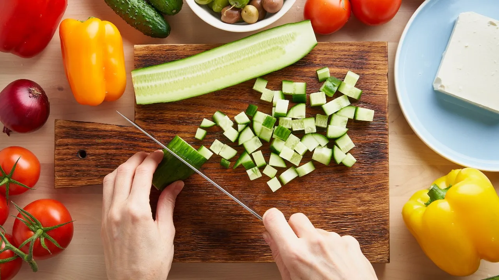
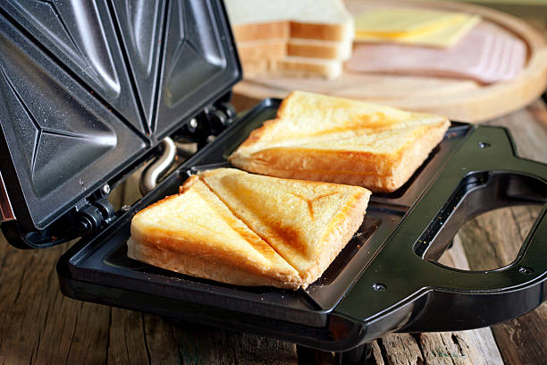
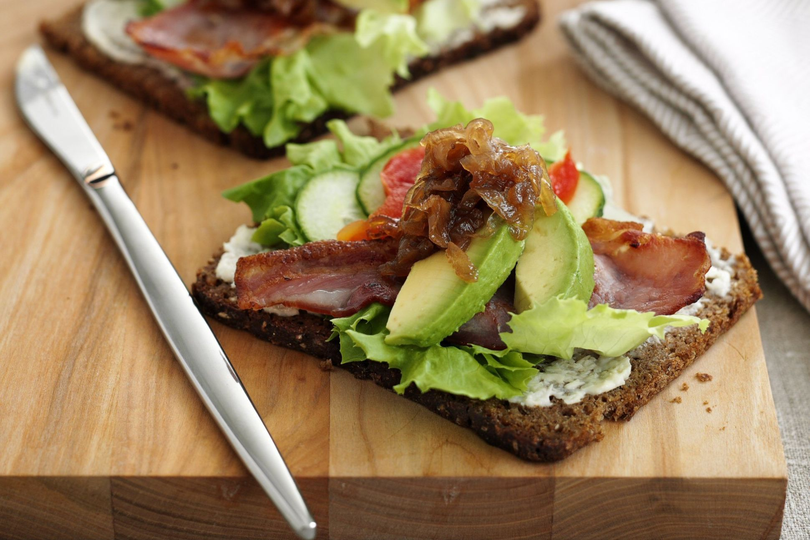

Make this delicious sandwich easily with this recipe!


Ingredients
- Bread
- Chutney
- Boiled Potatoes
- Onions
- Tomato
- Cucumber
- Beatroot
- Capsicum
Sandwich Recipe
Make this delicious sandwich easily with this recipe!
A sandwich provides aprrox. 360 calories
A sandwich contains around 5 to 5.2 gram of sugar
A sandwich contains around 19 to 19.5 gram of protien
To make this sandwich recipe, wash tomatoes, spinach leaves, and cucumber. On a chopping board, peel and slice the cucumber along with onions and tomatoes into a round shape. Transfer them into separate plates. Next, take a large bowl and add the hung curd to it. Beat it well with a spatula and add mayonnaise, oregano, salt, black pepper powder in it. Mix these well and make sure it is smooth.
Now, place a non-stick pan over medium flame and melt butter in it. When the butter has melted, place the bread slices on it. Toast the bread on both sides until golden-brown in color. Repeat this with all the slices of bread.
On a flat surface, spread the toasted bread slices. Now, take a spoonful of the yoghurt-mayo dip and slather it on each slice. Spread it evenly across each slice. Place spinach leaves on 3 slices and then top it up with tomato slices. Next, add a layer of onion slices and cheese slices. Finally, top it up with cucumber slices. Cover these three slices with the remaining three slices and cut them from the center.
Insert a toothpick in each of the sandwiches to hold the filling in place. Place these on a platter and serve it with tomato ketchup to enjoy! Do try this recipe and don't forget to like, rate and leave your valuable comments.